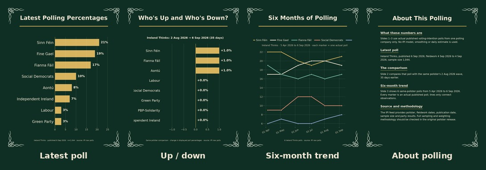

Raw polling · six-month same-pollster review
Download all 4 finished slides
Caption
Six months of Ireland Thinks polling, using actual published poll results rather than the IPI daily model. Latest poll: 6 Sep 2026, n=1,044. Slide 2 compares it with the same pollster's 2 Aug 2026 wave (35 days earlier). Slide 3 shows all 6 Ireland Thinks polls from 5 Apr 2026 to 6 Sep 2026 inside the 183-day trend window; every marker is an actual published poll. These are individual survey results, so normal polling uncertainty applies. Full sampling and weighting methodology should be checked in the original pollster release. Source: Irish Polling Indicator (IPI) raw polls https://github.com/Irish-Polling-Indicator/ipi-data